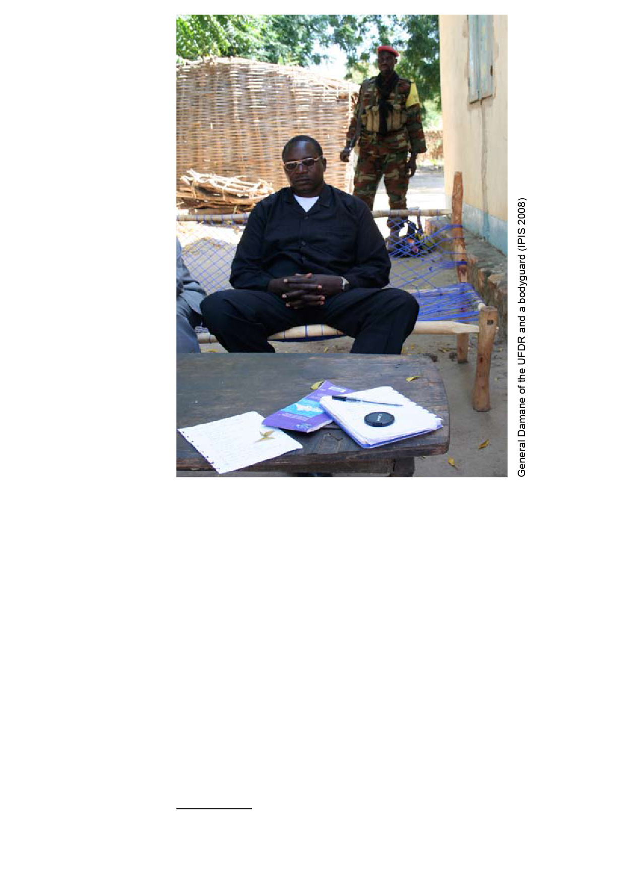

The titles in
the left column
refer to the map
that should be
consulted while
reading the text
Rebels
Part 1: The conflict actors
The APRD
The APRD (Armée Populaire pour la Restauration de la République et la
Démocratie, PopularArmy for the Restoration of the Republic and Democracy)
is the most widespread rebel movement on Central African soil. It occupies
most of the territory between Ngaounday/Bocaranga in the northwest
and Kaga-Bandoro/Kabo in the north. It came into existence immediately
after the presidential elections of 2005. Its membership is heterogeneous.
Among its ranks are FACA deserters (Forces Armées Centrafricaines,
Central African Armed Forces), Central African ‘ex-liberators’3, Chadian ‘ex-
liberators’, local self-defence groups and converted road bandits (BOX 1).
The command structure is equally complex. The current makeshift leadership
of the APRD consists of a political chief, former Minister of Defence Jean-
Jacques Demafouth, who is in charge of negotiating with the government,
and a number of military commanders. Demafouth lives in Paris where he
works as a lawyer. In the field there are several leading figures. The most
influential seems to be ‘Colonel’ Laurent Djim-Woei Bebiti, who is generally
referred to as ‘the spokesman’. Everyone who has to deal with the APRD in
3 Fighters who helped Bozizé overthrow the Patassé regime in 2003.
7